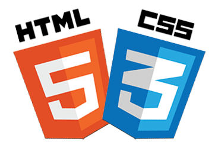

HTML en CSS zijn een
van de belangrijkste onderdelen in heel je website.
In het algemeen dan HTML.
De code is net een menselijk
lichaam de html is opbouw
je skelet, en dan zal css de
huid het uiterlijk en alles
wat er qua kleur is laat zijn.
CSS is zo een mooi element omdat
je het kan gebruiken om
kleuren en groottes of zelfs
posities van Text kan wijzigen.

Javascript
Javascript geeft je website FUNCTIES
die je website kunnen verbeteren
met als een voorbeeld een pop
up animatie.
Daarnaast wordt javascript
veel gebruikt voor games of
mischien zelfs apps of programmas.
Als je je website een beetje interactie
wil geven dan zal je dit moieten toepassen
in een HTML bestand.
PHP
PHP is een scripttaal die
verbonden is aan de server
die ervoor kan zorgen dat
er data wordt verzameld
of cookiess worden verstuurd.
Als een voorbeeld van deze scenario
kan je een welkom script maken met
php die ervoor zorgt dat ieder keer
als iemand deze website bezoekt
Er een berichtje wodt gestuurd naar de
server van je website met php. php
\ staat origineel voor:Personal Home Page Tools.
SQL
Mysql is een programma waar de mogelijkheden
van saves wachtwoordenlijsten en datategenkomt.
Als je Mysql gebruikt op je webiste kan je
bijvoorbeeld je blogpagina opslaan of een
youtube video posten zonder dat ie weg gaat.
Dit wordt ook gebruikt om accountgegevens in op
te slaan met als voorbeeld dus ook hoe de wachtwoord
vergeten functie werkt.